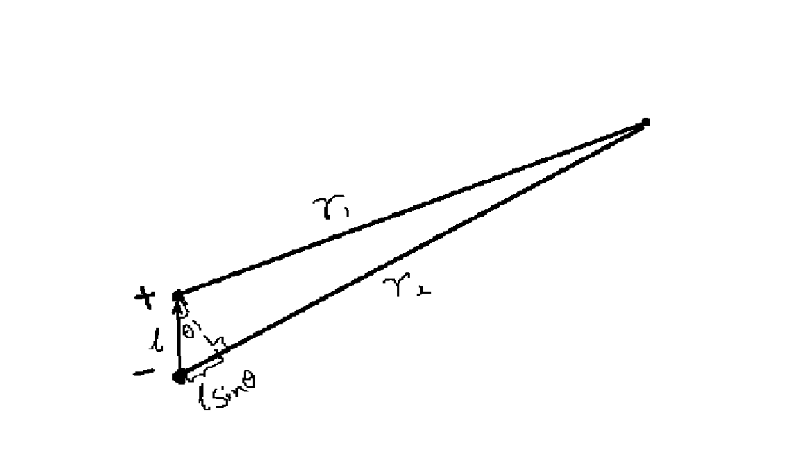

对于处于三维空间中的电偶极子，我们可以先求出在远点处的电势，再通过对电势求梯度，得到电场的大小.首先给出电势：
对上式进行一些简单的数学变化，就可以得到如下①式：
对于(r1-r2)/(r1×r2)，我们考虑r1×r2在所测点距离电偶极子的距离远大于电偶极子正负电荷之间的距离时，将其近似为r2，同时我们可以通过下图看出r1-r2实际上等于lsinθ，那么我们重新书写①式：
我们再重新看看这个公式，不难发现在这其中隐藏的矢量运算——l×sinθ，追求其本质，实际上是电偶极子的距离在偶极子的某一极到试探电荷的连线上的投影，也就是说，我们可以将它改写成l•r/r3.那么方程重写为：
这样就结束了吗？不是的，此时如果我们做进一步的思考，就会发现其实在这里隐藏了电偶极矩的定义——p=q×l，所以还需要我们再次重写化简，得到最后精炼的③式：
这样我们就得到了最开始想要的电偶极子在任意远点的电势，但是这还不够，我们还可以得到它在任意远点的电场，而我们知道只要对任一点电势求负梯度即可得到这一点的电场：
因此我们可以对③式求负梯度，来得到电场的情况：
注意：这里关于梯度的矢量运算将放在数学部分。
作者：Do1tY5f
更新时间：